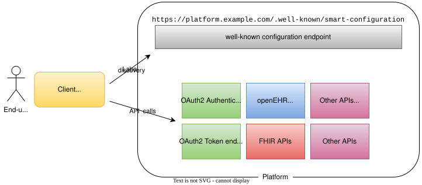

Service Discovery
A Platform typically exposes multiple service endpoints. These include OAuth 2.0 endpoints such as Authorization and Token, standard data service endpoints (e.g., openEHR REST APIs, FHIR APIs), and possibly other standard or proprietary APIs (e.g. DICOMWeb APIs).
The SMART Service Discovery mechanism extends the FHIR .well-known/smart-configuration endpoint definition.
It allows a Platform to advertise authentications endpoint, SMART capabilities, and a list of available services.

The configuration endpoint should be always available relative to the Platform base URL.
For example, given a base URL as https://platform.example.com, the SMART configuration endpoint must be available at https://platform.example.com/.well-known/smart-configuration.
If the base URL includes a path segment as https://platform.example.com/gateway/v1, then the configuration should be accessible at https://platform.example.com/gateway/v1/.well-known/smart-configuration.
Unlike the FHIR .well-known/smart-configuration, which defines the configuration endpoint relative to the base URL of the FHIR server, this specification defines this endpoint relative to the Platform base URL (i.e. the gateway).
This allows the Platform to advertise service capabilities beyond FHIR APIs, including openEHR REST APIs and other APIs that may not be part of the FHIR server itself.
While this provides greater flexibility and aligns with a multi-API architecture, Platform vendors are encouraged to ensure compatibility with SMART FHIR applications by maintaining a consistent issuer and exposing the FHIR API at the same base URL when feasible.
|
In order to maintain compatibility with SMART App Launch, it is recommended that the base URL of the Platform also acts as the base URL of the FHIR server.
Such applications often assume the |
Responses to /.well-known/smart-configuration endpoint must be served with the application/json MIME type. A representative example is shown below:
{
"issuer": "https://platform.example.com",
"jwks_uri": "https://platform.example.com/.well-known/jwks.json",
"authorization_endpoint": "https://platform.example.com/auth/authorize",
"token_endpoint": "https://platform.example.com/auth/token",
"services": {
"org.openehr.rest" : {
"baseUrl":"https://platform.example.com/openehr/rest/v1",
"description": "The openEHR REST APIs baseUrl",
"documentation": "https://example.com/openehr/docs",
"openapi": "https://example.com/openehr/rest/v1/openapi.json"
},
"org.fhir.rest" : {
"baseUrl":"https://platform.example.com/",
"description": "The FHIR APIs baseUrl"
},
"com.amazon.aws.s3.rest": {
"baseUrl":"https://s3.example.com/storage",
"documentation": "https://example.com/s3/docs",
"openapi": "https://example.com/s3/openapi.json"
},
"com.example.demographics": {
"baseUrl":"https://demographics.example.com/rest"
}
},
"token_endpoint_auth_methods_supported": [
"client_secret_basic",
"private_key_jwt"
],
"grant_types_supported": [
"authorization_code",
"client_credentials"
],
"registration_endpoint": "https://platform.example.com/auth/register",
"scopes_supported": ["openid", "profile", "launch", "launch/patient", "patient/*.rs", "user/*.rs", "offline_access"],
"response_types_supported": ["code"],
"management_endpoint": "https://platform.example.com/user/manage",
"introspection_endpoint": "https://platform.example.com/user/introspect",
"revocation_endpoint": "https://platform.example.com/user/revoke",
"code_challenge_methods_supported": ["S256"],
"capabilities": [
"launch-ehr",
"permission-patient",
"permission-v2",
"client-public",
"client-confidential-symmetric",
"context-ehr-patient",
"sso-openid-connect",
"context-openehr-ehr",
"openehr-permission-v1",
"launch-base64-json"
]
}The details of the /.well-known/smart-configuration are described in the sections below.
Authentication Endpoints
The following attributes in the .well-known/openid-configuration must match those defined in the OAuth 2.0 + OpenID Connect Discovery specification as well as the FHIR SMART metadata specification:
-
issuer -
jwks_uri -
authorization_endpoint -
grant_types_supported -
token_endpoint -
token_endpoint_auth_methods_supported -
registration_endpoint -
scopes_supported -
management_endpoint -
response_types_supported -
introspection_endpoint -
revocation_endpoint -
capabilities -
code_challenge_methods_supported
Services
In addition to the FHIR-specific metadata, the response from configuration endpoint must include the services section describing the available service interfaces exposed by the Platform.
This section enables Applications to dynamically discover the APIs provided by the Platform, along with their respective base URLs, descriptions, and potentially documentation links.
The services is a hash map, where each key is a reverse domain name uniquely identifying a service (e.g., org.openehr.rest), and the corresponding value contains the service-specific metadata and base URL. This structure allows for a flexible and extensible way to declare multiple APIs that may coexist within the Platform.
At a minimum, the services section must include the openEHR REST API using the key org.openehr.rest.
For consistency reason, it is also recommended to include the FHIR API under the key org.fhir.rest:
-
org.openehr.rest: The base URL of the openEHR REST APIs(required) -
org.fhir.rest: The base URL of the FHIR APIs(recommended)
Additional services, such as CDS Hooks endpoints, terminology services, or non-RESTful interfaces, may be included using appropriately namespaced keys. For example:
-
org.dicomstandard.dicomweb.rest: DICOMWeb REST API endpoint -
com.amazon.aws.s3.rest: AWS S3-compatible REST API -
com.example.demographics: A vendor-specific demographic service
Each service definition may contain:
-
baseUrl: Absolute URL to the root of the API(required) -
description: Human-readable description of the service -
version: Service API version -
documentation: Link to service documentation -
openapi: Link to the OpenAPI (Swagger) definition of the API
Example:
{
"org.openehr.rest" : {
"baseUrl": "https://platform.example.com/openehr/rest/v1",
"description": "The openEHR REST API baseUrl",
"documentation": "https://platform.example.com/openehr/docs",
"openapi": "https://platform.example.com/openehr/rest/v1/openapi.json"
}
}Capabilities
The capabilities section advertises supported SMART features as an array value. In addition to those scopes defined in the original SMART App Launch framework, the following capabilities extend the list for openEHR platforms:
-
context-openehr-ehr: Indicates support for EHR-level launch context, requested vialaunch/patientscope and conveyed via theehrIdtoken claim. -
context-openehr-episode: Indicates support for Episode-level context, requested vialaunch/episode, scope conveyed viaepisodeId(experimental). -
openehr-permission-v1: Indicates support for fine-grained scopes and authorization scheme over openEHR resources. -
launch-base64-json: Indicates support for encoding launch context as a base64-encoded JSON object in thelaunchparameter.